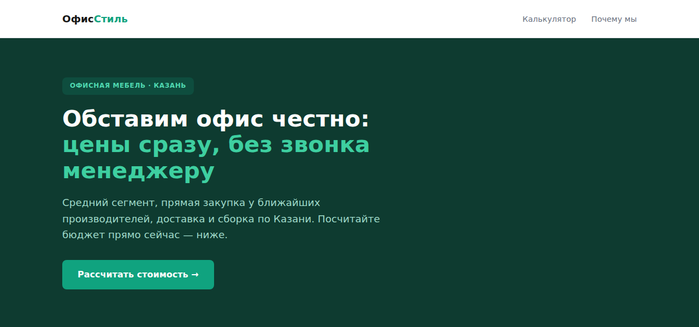
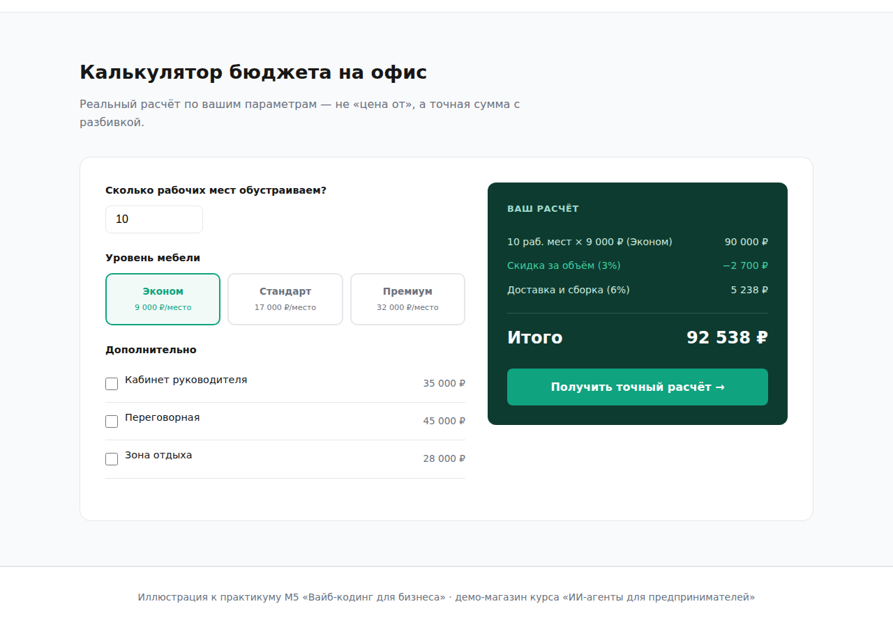
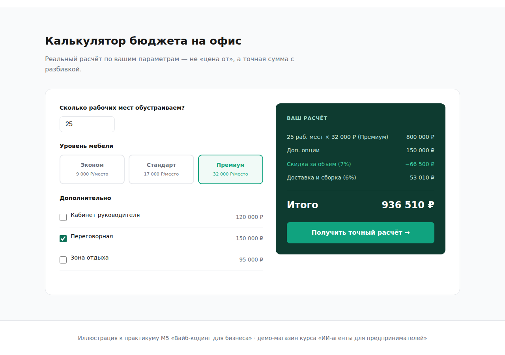

Посадочную страницу с работающим калькулятором бюджета. Плюс применённое на практике SEO из М2-02: собственный сайт, который сам следует правилам, которые мы советовали проверять у конкурентов.
«Вайб-кодинг» — модное слово для простой вещи: ты описываешь агенту, что должна делать страница, а не как её вёрстать. Но есть граница между «выглядит как сайт» и «работает как инструмент» — калькулятор, который не считает на самом деле, хуже, чем его отсутствие: это подрывает доверие в первую же минуту знакомства с брендом.
Позиционирование из М2 (пустая середина рынка, честные цены) и голос бренда из М3 — свои, если делал, или демо-данные курса.
Собери лендинг для нашего магазина офисной мебели: hero-блок с заголовком про открытые цены (без «свяжитесь с менеджером» — это наша позиция против федеральных конкурентов), блок из 4 карточек «почему мы» на основе разбора рынка. Минимализм, тёмный hero, светлые карточки, зелёный акцент.

Позиционирование — не абстрактный маркетинг, а прямое продолжение находок М2: «пустая середина рынка» и SWOT конкурентов (Феликс отпугивает скрытыми ценами) стали конкретным заголовком.
Ключевое слово — «реальной». Не «покажи примерную цену», а конкретная формула, которую можно проверить:
Добавь калькулятор бюджета: количество рабочих мест (число), уровень мебели (эконом/стандарт/премиум — три разные цены за место), доп. опции чекбоксами (кабинет руководителя, переговорная, зона отдыха — у каждой своя цена по уровню). Посчитай: places × цена_места + опции, скидка 3% от 10 мест и 7% от 20, доставка и сборка — 6% сверху. Результат должен пересчитываться сразу при любом изменении, с разбивкой по строкам.

10 мест × 9 000 ₽ = 90 000 ₽, скидка 3% (от 10 мест) = −2 700 ₽, доставка 6% от остатка = 5 238 ₽. Итого 92 538 ₽ — и это можно проверить в столбик.
Смени параметры на что-то более выразительное и посчитай сам:

25 × 32 000 = 800 000; + переговорная 150 000 = 950 000; − 7% (66 500) = 883 500; + 6% доставка (53 010) = 936 510 ₽. Столбик на бумаге и калькулятор на странице обязаны сойтись — здесь сошлись.
Открыть лендинг целиком (интерактивный): landing.html
Учебный момент. Разница между «выглядит правильно» и «посчитано правильно» решается одним и тем же способом на протяжении всего курса: не спросить агента «работает?», а взять калькулятор в руки и свериться с расчётом на бумаге. Ошибка в формуле скидки или порядке применения процентов не видна на глаз — только в цифрах.
Добавь на лендинг: title до 60 символов, meta description 120–160 символов, ровно один H1, schema.org Organization. Проверь нашим же скриптом seo-geo-audit.py из М2-02.
Это тот редкий момент курса, когда урок проверяет сам себя: инструмент, сделанный для аудита чужих сайтов в модуле 2, теперь проверяет наш собственный.
Какой калькулятор нужен в твоём реальном бизнесе — необязательно мебель? (Стоимость услуги по параметрам, расчёт доставки, окупаемость.) Логика та же: параметры → формула → разбивка → сумма.
| Симптом | Причина | Решение |
|---|---|---|
| Калькулятор красивый, но цифры «примерные» | Попросили «покажи цену», а не конкретную формулу | Пропиши формулу явно: что на что умножается, в каком порядке применяются скидки |
| Скидка посчиталась не от той суммы | Не уточнили порядок операций (сначала скидка или сначала доставка) | Явно распиши порядок: скидка от подытога, доставка — от суммы после скидки |
| Позиционирование лендинга нейтральное, «как у всех» | Не связали текст с находками М2 | Дай агенту конкретные факты из разбора конкурентов, а не общее «сделай продающий текст» |
| Забыли проверить SEO на собственном сайте | Кажется, что это правило только для чужих сайтов | Прогони свой инструмент из М2-02 и на своём лендинге тоже |
Собери лендинг с калькулятором под свою реальную услугу или товар. Проверь минимум два расчёта вручную. Покажи человеку со стороны и попроси его специально попытаться «сломать» калькулятор — ввести 0, отрицательное число, огромное число.
Калькулятор проверялся не визуально, а прямыми кликами и вводом значений: смена количества мест, переключение тарифа, включение чекбокса — и каждый раз число сверялось вручную. Совпало оба раза с первой попытки — но это повезло с формулой, а не гарантия: привычку сверять цифры, а не верить интерфейсу, стоит держать при себе на любом инструменте, который сам не проверял в столбик.